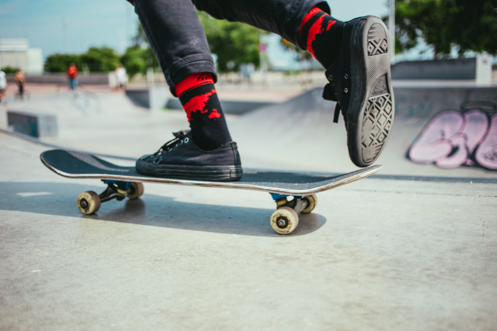

What's the difference? Longboard versus Skateboard
What is a longboard, anyway, and how is it different from a skateboard? Truthfully, longboards are a type of skateboard. All planks on wheels exist on a continuity between penny board and really long board. The smallest board is the penny or mini-cruiser, the former is less than 20 inches long and the latter less than 26 inches long. Penny board is a brand name, and they make plastic boards that are the smallest kind of skateboard a person can reasonably stand on. Mini cruisers can be made of any material, but they are slightly longer and wider than penny boards. The next size up is the skateboard, which is notable for its design rather than its size. Unlike many longboards, a skateboard is symmetrical on both sides. They also come in many different lengths, although the typical size is 28 inches. Next to skateboards stands cruiser boards, which are often asymmetrical and have bigger, softer wheels than skateboards, even though the deck may be the same size. At the top end, from 37 inches and onward, are the longboards. There are no limits on how long these are, and some may be as much as 60 inches in length.
Quick terms and techniques
Technique
- Carving – Making wide turns across a roadway to maintain a low speed and high degree of control
- Switch – riding switch is when you ride with your primary foot on the back of the board.
- Sliding – Deliberately breaking traction to quickly reduce speed or make tight turns
- Freestyle – Technical riding style which utilizes sliding while standing, tight trucks, and elements of skateboarding to perform tricks on the road
- Downhill – Rapid descent of steep hills, typically performed with a full-face helmet and a significant amount of padding. The most popular genre of professional longboarding.
- Cruising – Casual riding on flat or slightly sloped roads. Low speed, low impact, and the safest way to skate.
- Dancing – Performed on extreme length boards on flat ground. Involves low speed tricks and full body rotations and jumps on a moving board.
- Regular or goofy stance – If you ride regular, your left foot goes on the front of the board. If you ride goofy, your right foot is in front. At high skill levels, this doesn’t matter because a rider can alternate which foot is forward.
Terminology
- Bail – crash
- Ate it/eat it – crash, also
- Bombing – to go down a hill really fast
- Wheel bite – When using a top-mounted setup with narrow trucks, the board can touch the wheels during a tight turn. This can cause a wheel to slow down or stop, throwing the rider from the board.
- Pushing/pumping – Using your back foot to gain speed on a board by planting it on the ground while your front foot stays on the deck.
- Mongo pushing – Pushing with your front foot. Considered limiting by many experienced riders.
An example of downhill longboarding